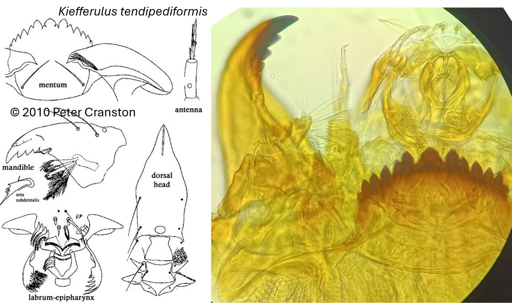

Kiefferulus tendipediformis (Goetghebuer, 1921)

Antennes
Antennes avec 5 segments. Organes de Lauterborns très réduits.
Mandibules
Dent dorsale pâle avec 1-2 petites dents subapicales. Dent apicale forte et 3 dents internes.
Mentum
Dent médiane trifide, profondément crénelée. 6 paires de dents latérales de chaque côté, 1ère et 2ème paires de dent latérale presque fusionnées. Plaques ventromentales plus larges que le mentum.
Labre
SI plumeuses de chaque côté. SII simples. Peigne de l’épipharynx simple avec plusieurs dents de tailles similaires. P
Prémandibules
rémandibules avec 6 dents pointues.
Ecologie
Les larves de Kiefferulus sont régulièrement trouvées dans les sédiments des petits plans d'eau dystrophes